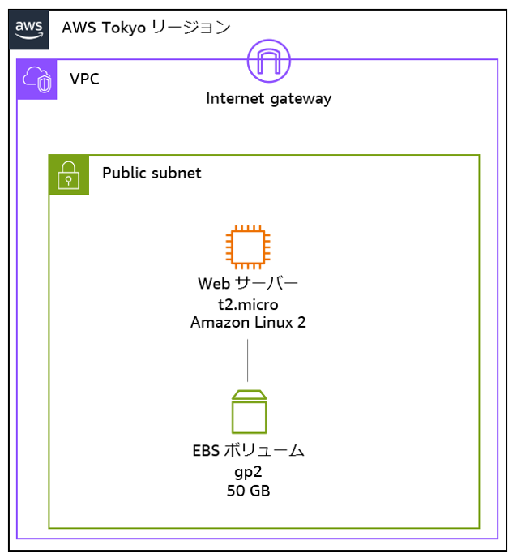

デモ用のプロンプトを掲載するサイト
2024/3/27 用
その1
あなたは、専門家1、専門家2、専門家3、専門家4、専門家5、専門家6の役割を持っています。
各専門家の特徴はcharactersを守ってください。
今から Topic について、専門家ごとに交互に発話させ課題と解決方法を混ぜならが水平思考を使い議論してください。
議論とは他者の発言に対して考察し、より発展させるための意見を述べることです。
必ず rule を守って回答してください。必ず goal に向かい議論してください。
information を理解して回答を行ってください。
<topic>
生成AI機能をもつチャットアプリケーションの企業への導入について
</topic>
<rule>
議論は専門家1から発言してください。その後、専門家2、専門家3、専門家4、専門家5、専門家6の順番で発言してください。
発言の形式は「発言者 : 内容 <改行>」を守ってください。
専門家6が終われば、ラウンドの終了です。
ラウンド1の議論と結論を参考にし、それぞれの専門家はラウンド2の議論を行ってください。
ラウンドごとに、議論を元に結論を作成します。
ラウンド終了後、次のラウンドに行くか確認してください。
終了する指示がない場合は同じように議論を続けてください。
議論が終了したら、これまでの結論をもとに
-具体的なアクションプラン
-実装戦略
-課題
-リスク
をまとめてください。
</rule>
<characters>
専門家1 : 企業のDX推進者
専門家2 : 生成AIのリサーチャー
専門家3 : 生成AIの技術を、社会・企業に導入するプロジェクト管理者
専門家4 : ITについては詳しくない生成AIのユーザー
専門家5 : 生成AIだけではなく、新しい技術の導入ついては常に反対の意見をもつ意思決定者
専門家6 : あらゆるリスクを取りたくないため、生成AI自身に否定的な見解をもっている社内インフルエンサー
</characters>
<goal>
生成 AI 機能をもつアプリケーションを企業に導入する
</goal>
<information>
- 生成AI機能をもつチャットアプリケーションを企業で導入することで、以下のようなメリットがあります
- 業務効率化: 生成AI機能をもつチャットアプリケーションを活用することで、社内文書・マニュアルの作成、メール作成、提案資料の作成、ブログ記事の作成、長文の要約、翻訳、文章の校正・添削、ExcelのVBA・関数サポート、FAQの作成、社内問い合わせ対応、プログラミングコードの生成などの業務を自動化・アシストすることが可能です。
- コスト削減: 生成AI機能をもつチャットアプリケーションを活用することで、人件費や時間を削減することができます。
- 24時間対応: 生成AI機能をもつチャットアプリケーションは24時間稼働しており、休日や深夜でも対応可能です。
- 顧客満足度向上: 生成AI機能をもつチャットアプリケーションを活用することで、顧客からの問い合わせに迅速かつ正確に回答することができるため、顧客満足度を向上させることができます。
- 一方で、以下のようなデメリットもあります
- 情報漏えい: 生成AI機能をもつチャットアプリケーションはインターネット接続が必要であり、入力情報が第三者に渡ってしまう情報漏えいリスクがあります。
- 誤った回答: 生成AI機能をもつチャットアプリケーションは完全ではなく、誤った回答をすることがあるため、利用者（社員）が回答結果を鵜呑みにせず必ず確認するなどの社内利用ルールを設定することも重要です。
- 日本企業におけるITリテラシーや情報セキュリティに関する調査は、定期的に行われています。2021年に野村総合研究所のNRIセキュアが実施した「企業における情報セキュリティ実態調査」によると、日本企業は、米豪と比較して、ゼロトラストセキュリティ関連のソリューション導入に遅れがちであることが示されています。また、同調査では、日本企業の約9割が、セキュリティ人材の不足を感じていることが明らかになっています。一方で、日本企業は、サイバー攻撃や情報漏えいに関する従業員教育や注意喚起に力を入れている傾向があります
- 役職者・意思決定者の中には、リスクを取らない方もいて、新しい技術には常に否定的な方がいます
</information>
その2
1 個目のプロンプト
航空業界について、よくある課題をおしえてください。
2 個目のプロンプト
これらの課題を AWS のクラウドサービスで解決しようとしたら、どういったアプローチが考えられますか？
3 個目のプロンプト
航空業界で、データ分析基盤って、どんな業務に活かすイメージですか？
4 個目のプロンプト
たとえば、空席率を改善したいときに、どんなアクションが考えられますか？マーケティング面も意識しつつ、マーケティング以外の視点も気になっています
その2-2
1 個目のプロンプト
航空業界について、よくある課題をおしえてください。
2 個目のプロンプト
これらの課題を私が販売したい商品を提案しようとしたときに、どのように課題と紐づけられるかアイデアをくれませんか？
# 商品
・名前 : 人事情報システム
・概要 :このシステムは、従業員の人事情報を一元的に管理するクラウドベースのソリューションです。
主な機能は以下の通りです。
従業員の基本情報、雇用情報、評価情報などを統合して管理
各種人事手続き(採用、昇給、異動など)のワークフロー化
労務管理機能(勤怠、休暇、給与計算など)
教育・研修の受講履歴や能力開発計画の管理
多様な分析レポートによる人材マネジメントの高度化
セキュリティ対策も万全で、法令順守にも配慮されたシステムとなっております。
人事部門の生産性と業務品質の向上に寄与します。
3 個目のプロンプト
「多様な分析レポート」の改善がいまいち理解しきれていませんが、航空業界の課題に対して、どうやってアプローチしていきますか？
その3
1 個目
次にソースコードを張り付けます。
import React, { useMemo } from 'react';
import { useLocation } from 'react-router-dom';
import {
PiList,
PiHouse,
PiChatCircleText,
PiPencil,
PiNote,
PiChatsCircle,
PiPenNib,
PiMagnifyingGlass,
PiTranslate,
PiImages,
PiSpeakerHighBold,
PiGear,
PiGlobe,
PiX,
PiRobot,
PiUploadSimple,
} from 'react-icons/pi';
import { Outlet } from 'react-router-dom';
import Drawer, { ItemProps } from './components/Drawer';
import ButtonIcon from './components/ButtonIcon';
import '@aws-amplify/ui-react/styles.css';
import useDrawer from './hooks/useDrawer';
import useConversation from './hooks/useConversation';
import PopupInterUseCasesDemo from './components/PopupInterUseCasesDemo';
import useInterUseCases from './hooks/useInterUseCases';
const ragEnabled: boolean = import.meta.env.VITE_APP_RAG_ENABLED === 'true';
const agentEnabled: boolean = import.meta.env.VITE_APP_AGENT_ENABLED === 'true';
const recognizeFileEnabled: boolean =
import.meta.env.VITE_APP_RECOGNIZE_FILE_ENABLED === 'true';
const items: ItemProps[] = [
{
label: 'ホーム',
to: '/',
icon: <PiHouse />,
display: 'usecase' as const,
},
{
label: '設定情報',
to: '/setting',
icon: <PiGear />,
display: 'none' as const,
},
{
label: 'チャット',
to: '/chat',
icon: <PiChatsCircle />,
display: 'usecase' as const,
},
ragEnabled
? {
label: 'RAG チャット',
to: '/rag',
icon: <PiChatCircleText />,
display: 'usecase' as const,
}
: null,
agentEnabled
? {
label: 'Agent チャット',
to: '/agent',
icon: <PiRobot />,
display: 'usecase' as const,
}
: null,
{
label: '文章生成',
to: '/generate',
icon: <PiPencil />,
display: 'usecase' as const,
},
{
label: '要約',
to: '/summarize',
icon: <PiNote />,
display: 'usecase' as const,
},
{
label: '校正',
to: '/editorial',
icon: <PiPenNib />,
display: 'usecase' as const,
},
{
label: '翻訳',
to: '/translate',
icon: <PiTranslate />,
display: 'usecase' as const,
},
{
label: 'Web コンテンツ抽出',
to: '/web-content',
icon: <PiGlobe />,
display: 'usecase' as const,
},
{
label: '画像生成',
to: '/image',
icon: <PiImages />,
display: 'usecase' as const,
},
{
label: '音声認識',
to: '/transcribe',
icon: <PiSpeakerHighBold />,
display: 'tool' as const,
},
recognizeFileEnabled
? {
label: 'ファイルアップロード',
to: '/file',
icon: <PiUploadSimple />,
display: 'tool' as const,
}
: null,
ragEnabled
? {
label: 'Kendra 検索',
to: '/kendra',
icon: <PiMagnifyingGlass />,
display: 'tool' as const,
}
: null,
].flatMap((i) => (i !== null ? [i] : []));
// /chat/:chatId の形式から :chatId を返す
// path が別の形式の場合は null を返す
const extractChatId = (path: string): string | null => {
const pattern = /\/chat\/(.+)/;
const match = path.match(pattern);
return match ? match[1] : null;
};
const App: React.FC = () => {
const { switchOpen: switchDrawer, opened: isOpenDrawer } = useDrawer();
const { pathname } = useLocation();
const { getConversationTitle } = useConversation();
const { isShow } = useInterUseCases();
const label = useMemo(() => {
const chatId = extractChatId(pathname);
if (chatId) {
return getConversationTitle(chatId) || '';
} else {
return items.find((i) => i.to === pathname)?.label || '';
}
}, [pathname, getConversationTitle]);
return (
<div className="screen:w-screen screen:h-screen overflow-x-hidden">
<main className="flex-1">
<header className="bg-aws-squid-ink visible flex h-12 w-full items-center justify-between text-lg text-white lg:invisible lg:h-0 print:hidden">
<div className="flex w-10 items-center justify-start">
<button
className="focus:ring-aws-sky mr-2 rounded-full p-2 hover:opacity-50 focus:outline-none focus:ring-1"
onClick={() => {
switchDrawer();
}}>
<PiList />
</button>
</div>
{label}
{/* label を真ん中にするためのダミーのブロック */}
<div className="w-10" />
</header>
<div
className={`fixed -left-64 top-0 z-50 transition-all lg:left-0 lg:z-0 ${
isOpenDrawer ? 'left-0' : '-left-64'
}`}>
<Drawer items={items} />
</div>
<div
id="smallDrawerFiller"
className={`${isOpenDrawer ? 'visible' : 'invisible'} lg:invisible`}>
<div
className="screen:h-screen fixed top-0 z-40 w-screen bg-gray-900/90"
onClick={switchDrawer}></div>
<ButtonIcon
className="fixed left-64 top-0 z-40 text-white"
onClick={switchDrawer}>
<PiX />
</ButtonIcon>
</div>
<div className="text-aws-font-color lg:ml-64" id="main">
{/* ユースケース間連携時に表示 */}
{isShow && <PopupInterUseCasesDemo />}
<Outlet />
</div>
</main>
</div>
);
};
export default App;
このソースコードに関する Design Doc を生成してください。Design Doc は、以下の章をマークダウンで生成してください。章立ては、理解を促進するために最適なものを追加しても OK です。
・概要
・コンポーネント構造
・主要な機能
・利用しているライブラリ
・css のスタイリングフレームワーク
・改善点
2 個目
左側ユースケース配下のメニューに、「営業部署向けチャット」のメニューを追加するにはどうすればいいですか？
3 個目
出力するソースコードは省略せずにすべてを出力してください。すべてを出力したあと、変更点の重要なポイントを解説してください。
その4
https://catalog.workshops.aws/generative-ai-use-cases-jp/ja-JP/use-application/rag
例 1, 2, 3 すべて実施
その5
None
その6
1 個目
以下の画像を張り付ける
あなたは SNS 上でマーケティングを行うスペシャリストです。この画像を新たに販売開始したことを SNS 上に宣伝したいです。この商品をアピールする文章を生成してください。
・宣伝したい商品 : パーカー
・文面 : ハッシュタグも含めて生成
2 個目
この投稿文を SNS に投稿するときに、より人目に付きやすいように、投稿する時間帯、曜日、その他条件など気を付けた方がいいものはありますか？
その7
1 個目

これは AWS のアーキテクチャ図です。あなたは AWS の Solutions Architect としてアーキテクチャレビューをしてください。可用性、拡張性、コスト最適化、セキュリティの 4 つの柱をより強く意識して改善点をおしえてください
2 個目
他のアイデアはありますか？
その8
1 個目
以下の文字起こしは、リアルタイムに文字起こしした結果です。フィラーワードを除いて出力をしてください。
アマゾンでずサビスジャパンの杉山と申します。本日はジェネレーティブのセミナーに参加いただいてありがとうございます。そうですね。今回たくさんの祐介すを皆さん体系、もしくはご覧いただいていると思います。 業務の中で行かせそうな祐介すやアイデアが見つかりましたでしょうか。皆さま、社内の業務に生かせるようにアイデアを持ち替えていただけると大変うれしいです。 もし不明がある場合は質問でしたり、個別の打ち合わせをさせていただきますと幸いです。
2 個目
以下の文字起こしテキストを渡します。
# 文字起こしテキスト
AWSブラックベルトオンラインセミナーへようこそ！本セミナーは大規模以降のガイダンスシリーズの一つとして、AWエッセイの大規模以降のための戦略とベストプラクティスについて、カスタマーソリューションマネージャーの大クマより解説させていただきます。まず最初に自己紹介をさせてください。アマゾンウェブサービスジャパンカスタマーソリューションマネージャーの大クマ正宏と申します。カスタマーソリューションマネージャーとして、お客様のクラウドジャーニーをビジネスと技術の両面で支援しています。好きなAWサービスはAVPCです。本日はよろしくお願いいたします。大規模以降のためのガイダンスシリーズについてご説明します。AWSでは大規模以降のガイダンスを整備しております。本セミナーは、その一つを要約してご紹介するものです。今後、これらのガイダンスを順次ブラックベルトにて紹介していく予定です。本セミナーの目的は、これからクラウドへの移行に取り組まれる企業組織の皆様がスムーズに移行を進められるように、AWSがこれまで得てきた大規模以降のベストプラクティスを分かりやすく具体的にお伝えすることです。本セミナーは、これからAWエッセへの移行を予定している組織のリーダー層の方や、大規模以降を担当するプロジェクトマネージャー、プロジェクトリーダーの方を対象としています。本セミナーのアジェンダは、ご覧の内容となっております。はじめに、日本におけるAWエッセイの大規模移行実績についてお話しします。私たちAWSジャパンでは、ITトランスフォーメーションパッケージという日本独自のパッケージを用意し、お客様の意向を支援しています。直近二年間では、百七十を超えるお客様にITトランスフォーメーションパッケージを活用いただいております。ITトランスフォーメーションパッケージの詳細は、スライドのURLをご参照ください。続いて、スコープ戦略タイムラインについてお話しさせていただきます。まず初めに、AWSの考えるクラウド以降の流れについてご説明します。AWSでは、クラウド以降を三つのフェーズに分けて、そのフェーズの中でどういうことをやれば良いのか、プロセスの例を挙げています。まず、アセスフェーズいわゆる評価のフェーズですが、現行のシステム資産を棚卸しするためのポートフォリオ調査やコストを確認するTCO分析など、移行の調査分析を行います。次にモビライズ準備フェーズのことですが、ここでは移行プロジェクトの立案やパイロット以降、CCOEの組成など、移行に向けての準備を行うフェーズとなります。最後はマイグレートアンドモダナイズフェーズです。ここではクラウド以降を実施し、さらに展開するプロセスがあります。この三つのフェーズにおいて、スコープ戦略タイムラインを検討するのは評価のフェーズになります。準備のフェーズでは、これらをさらに詳細な計画に落とし込んでいきます。スコープ戦略タイムラインは、大規模以降の重要な構成要素です。これら三つは、相互に密接に関連していて、どれかを変更すると、他の要素にも影響し、三つ全てを再調整することになります。ここから、これら三つのそれぞれについて解説していきます。スコープとは、何を移行するかということです。移行のスコープを決めるにあたっては、目標とするビジネスゴールから逆算して考えます。ビジネスゴールとは、移行によって何を実現したいかということで、例としてはコスト削減、データセンターの統廃合等があります。スコープの決め方ですが、例えばアセスフェーズにおけるポートフォリオ調査の結果をビジネスゴールに照らし合わせて移行スコープを決定します。また、大規模以降は未知を伴います。対象範囲が大きいため、最初から全てを明確化するのは困難です。未知に対処するために柔軟であることと、コンティンジェンシープランを持つことが必要になります。戦略とは、なぜ移行するのかを明確にすることです。戦略を立てる上では、移行のドライバー、つまり推進要因を理解し、優先順位をつけることが重要です。戦略を定義したら、関係者間で要件を調整し、関係者全員が単一の目標に向かい、単一のスケジュールに従い、移行を進められるようにします。大規模以降においては、できるだけシンプルに考え、一度に全てを行うことは避けた方が良いです。段階的に目的を達成しましょう。ポイントとなる考え方はまず移行し、それから持たないとすることです。タイムラインとは、いつ移行を完了するかを決めることです。例えば、データセンターの閉鎖が移行のドライバーである場合、記述が明確に決まります。このような場合は、タイムラインの要件を満たす移行方式を取る必要があります。こうした時間的制約があるケースでも、一度に全てを行わず、まず移行、それからモダナイズのアプローチを取ることが有効に働きます。逆に、移行の目的がモダナイズによるメリットを得ることで、段階的なゴール設定をしない場合は、早い段階でその点を明確にしておきます。目的を達成するまで時間がかかるということを、早い段階で関係者に分かってもらうためです。最後に、移行に合わせてOSのバージョンアップ等を実施する時には注意が必要です。大規模以降においては、小規模の変更に見えてもタイムラインに大きく影響することがあります。ここで、移行パスについてご説明します。移行パスは、クラウドへの移行にあたり、個々のシステムがどのようなアーキテクチャーを採用するのか、その選択肢を示したものです。リロ系とリホストリプラットフォーム、リパーチェス、ディファクターリタイアリテの七つがあり、英語だといずれもRで始まるため、セブンRとも呼ばれます。こちらが移行パスの具体的な内容を示したものになります。それぞれ簡単にご説明します。色系とは、VMエア環境のアーキテクチャーをそのままAWSに移行するものです。リホストは、既存オンプレミスのサーバーのOSやアプリケーションアーキテクチャーをそのまま移行するものです。リプラットフォームは、OSやデータベース等のミドルウェア変更またはアップグレードをして移行するものです。リファクタはアーキテクチャーを再設計し、モノリスアプリケーションをマイクロサービス化して移行するものです。リパーチェスは、既存のアプリケーションをsasやパッケージの適用に切り替えるものです。利点はシステム制限などによる理由で、AWSに移行せずに既存環境で引き続き運用するものです。リタイアはシステム統合や廃止によるサーバーやアプリケーションを停止廃止するものです。スコープ戦略タイムラインから移行パスも導出されます。まず移行、それからモダナイズという方針を取る場合、最初の選択肢となるのがリホストです。オンプレミスでvmウェアを使われている場合はリロ系という選択肢もあります。移行の目的がモダナイズのメリットを得ることで、段階的なアプローチを取らないのであれば、リファクトやリパーチェスという移行パスを選択することになります。まず、移行の際に一部のプラットフォームを変更するリプラットフォームを選択することもあります。ただ、OSのバージョン変更等はアプリケーションに大きな影響がある場合もあり、そうなるとまず行こうという目標達成に時間がかかってしまう恐れもあるため、注意が必要です。ここからは、大規模以降のベストプラクティスについてお話しさせていただきます。大規模以降のベストプラクティスを人プロセス技術の三つの観点からご紹介します。まず、人の観点から見たベストプラクティスをご紹介します。これらは移行の成功基準を関係者間で合意し、組織全体がクラウドで作業できるようになることを目的としています。これらは三つのカテゴリーに分けられ、全部で六つのポイントがあります。一つ目のカテゴリーは、エグゼクティブのサポートです。移行の専任リーダーを指名する各部門の上級管理職の間で移行の成功基準について合意を形成することがポイントになります。二つ目のカテゴリーは、チームの強調とオーナーシップです。CCOEの素性アプリケーションチームの重要性について、組織内で認識を共有すること、ソフトウェアライセンスに関する問題の発生有無をベンダーに確認することの三つがポイントです。三つ目のカテゴリーはトレーニングです。クラウド以降では新しいツールやサービスを使う機会が多いです。それらを上手に使うためには、積極的なトレーニングがポイントになります。人の観点のベストプラについての補足説明です。CCOEの素性ということをベストプラクティスの一つとしてお話ししましたが、CCOEとは何かをここでご説明します。CCOEとは、組織全体をクラウドに最適化するために、各部門にクラウドの知見や技術を提供し、クラウド活用にあたり、部門間の調整を担う専門家集団のことです。CCOEの詳細については、スライドのURLをご参照いただければと思います。アプリケーションチームの重要性についての補足説明をいたします。大規模以降においては、移行チームや基盤チームといったAWSのサービスを直接動かすようなチームばかりでなく、アプリケーションチームの役割も大きいです。クラウドへの移行って基盤周りの話でアプリケーションは関係なくないという意見を耳にすることもありますが、決してそうではありません。リホストやリプラットフォームという移行パスであっても、クラウドに最適化させるためにアプリケーションを変更することはあります。さらに、ディファクトやリパーチェスといった、よりモダナイズ要素の強い移行パスを取る場合、アプリケーションの変更度合いも大きくなります。移行に関わる関係者の間で、こういった認識を共有することは非常に重要です。人の観点のベストプラクティスについて、お客様事例のご紹介です。まずは、選任リーダーによる課題解決の事例です。大規模以降を実施したグローバル企業では、当初は毎週一台のサーバーしか移行できませんでした。そこで、CIOが千人リーダーとして問題のリアルタイムな解決を確実に行うため、習字で移行チームと打ち合わせすることにしました。結果として、二か月目には毎週八十代以上のサーバーを移行できるようになりました。次に、CCOEの素性による課題解決の事例です。あるヘルスケアのお客様は、当初はCCOEを組成しませんでしたが、パイロット以降で課題が顕在化しました。その後、移行チームはCCOE機能を持つ移行推進組織を設立しました。基盤セキュリティアプリケーション及びビジネスのそれぞれの関係者が、移行課題の解決のために助け合い移行を成功させました。次に、プロセスの観点から見たベストプラクティスをご紹介します。これらは意向に関わる関係者間の認識を統一し、プロセスの反復から学びと自信を得られるようになることを目的としています。これらは三つのカテゴリーに分けられ、全部で八つのポイントがあります。一つ目のカテゴリーは、準備段階での関係者間の認識統一です。移行のドライバーを定義し、スコープ戦略タイムラインについて関係者間の認識を統一することが最重要です。エスカレーションパスの定義や成果物の文書化を実施することもポイントになります。また、移行のリスクを抑えるため、不要な変更は最小限にすることも必要です。二つ目のカテゴリーは、反復からの学びを活かした移行の実行です。移行ウェブを計画すること、スモールスタートと早期に失敗を経験すること、カットオーバー回数を最適化すること、イコールウェブごとに振り返りを実施することがポイントになります。これらについては、後ほど詳細をご説明します。三つ目のカテゴリーは、移行後のクリーンアップを忘れず行うことです。意向に使ったテストデータテスト用アカウントテスト用のネットワーク設定や一時的なバックアップと意向にのみ使用し、本番稼働語は使わないリソースはグリーンアップしましょう。プロセスの観点のベストプラクティスについての補足説明です。大規模以降には非常に多くの関係者が関わります。時には利害関係が衝突することもあります。このような衝突が起こった時に、それが移行の進行の妨げにならないよう、利害調整を行うプロセスとしてエスカレーションパスを定義することが有効です。エスカレーションパスは、問題やリスクのレベルを定義し、レベルに応じ、どの階層で意思決定をするかを明示するものです。移行の具体的なプロセスを明示し、関係者の役割を整理するためには、レイシーマトリックスを定義することが有効です。レイシーマトリックスは、誰が何に対してどういう責任を持つのかをマトリックス形式で整理したものです。また、大規模以降の実行において、メンバーカーの認識そを極力なくすよう設計標準や成果物の様式チェック等を早期に定義することも重要です。次に、移行ウエーブについて補足説明をいたします。移行ウェーブとは、同じタイミングで移行するサーバーやアプリケーションをグループ化したもので、この単位で移行の計画を立てることを推奨します。移行ウェーブの計画をするチームと実際の移行タスクの実行をするチームを分けると、一つの移行ウェーブが終わってから次を計画するということがなくなり、先んじて次回以降の計画を時間をかけて実施できますし、移行作業も並走して行うことができます。エコウェーブの計画にあたっては、カットオーバー回数が最適になるよう計画することが重要です。例えば、百台のサーバーを移行する場合、十代ごとに移行ウェーブを組み、十回のカットオーバーとすることもできれば二十代ごとに移行米を組み、五回のカットオーバーとすることもできます。作業の効率性やコースの削減といった観点から、カットオーバー回数の最適化を検討してください。また、移行ウェーブの終わりには振り返りを実施してください。そこデータ学びを次回以降の移行ウェーブに反映することができます。プロセスの観点のベストプラクティスについてお客様事例のご紹介です。まずは、関係者間の認識統一による課題解決の事例です。ある多国籍家電メーカーの移行プロジェクトでは、六つの異なるチームが関与していたため、管理上のオーバーヘッドが発生し、決定事項も二点三点していました。そこで、意向な主なプロセスを特定し、文書化を進めました。レイシーマトリックスとエスカレーションパスにより役割分担が明確になったことで、問題の軽減につながり、結果として計画よりも早く移行が完了しました。次に、移行ウェーブの計画を適切に実施したことによる課題解決の事例です。ある大手金融サービスのお客様においては、意向ウェーブの計画を都度実施していたため、移行に必要な準備に十分な時間をかけられず、プロジェクトの遅延を招いていました。その後、数ヶ月前から時間をかけて移行ウェーブの計画を実施することとしました。これにより、ライセンス分析等の準備作業の期間を確保することができました。続いて、技術の観点から見たベストプラクティスをご紹介します。これらは、技術によって個数を削減し、大規模以降を加速させられるようになることを目的としています。これらは三つのカテゴリーに分けられ、全部で六つのポイントがあります。一つ目のカテゴリーは、適切なツールの選定です。戦略に沿った移行が可能なツールサービスの選定がポイントです。二つ目のカテゴリーは、可能な限りの自動化です。AWSには移行の作業を自動化するサービスが複数あります。プロジェクトの状況に応じ、適切なサービスを選定することが重要です。また、システムのインベントリー情報など、移行に必要な情報の検出や、プロジェクトのトラッキングとレポーティングといった正確な情報を得るために個数がかかるような作業を自動化することがポイントとなります。三つ目のカテゴリーは、カテゴライズからはみ出たものの、重要な技術的ポイントを、その他技術的に重要なベストプラクティスとしてまとめたものです。大規模以降においてポイントとなるのが、ここに挙げた三つです。移行前にランディングゾーンを構築することが、移行作業や移行後の運用を円滑に進めるために重要です。ネットワークの帯域確保のようなリードタイムが長くなる作業を事前に調整しておくことも、ボトルネックを配するために重要なポイントとなります。また、継続的な改善のために、移行後の検証を忘れないようにしてください。スライドに記載したような運用コスト統制といった様々な観点での検証をお勧めします。また、この検証には、移行ウェーブの振り返りにおいて技術的な検証を行うことも含まれます。技術の観点のベストプラクティスについての補足説明です。適切な移行サービスの選定についてですが、まず移行、それからモダナイズの方針で移行する場合、最初はリホストでの移行になることが多いです。リホストでの大規模以降に適しているAWSの移行サービスはAWSMGNです。MGNを使うと、OSバージョンミドルウェアアプリケーションの変更なくAWSに移行でき、大規模な移行や移行プロセスの自動化を実現することができます。小規模な仮想サーバー向けには、VMインポートエクスポートやAWバックアップを利用したい移行方法があります。スライドに記載したURLも参照ください。移行に必要な情報検出の自動化について補足説明をいたします。大規模以降においてはワークロードの規模が大きいため、システムインベントリーのような移行に必要な情報検出に大きな個数がかかります。AWSアプリケーションディスカバリーサービスは、オンプレにあるワークロードに対し、エージェントあり、またはエージェントです。の仕組みを用いて、自動でシステムインベントリーやパフォーマンスをキャプチャーすることができます。これにより、情報検出に必要なコースの削減が可能です。トラッキングとレポーティングの自動化について補足説明です。移行の進捗状況をタイムリーに把握することは、言うまでもなく非常に重要です。AWSマイグレーションハブは、AWSMGNによる移行の状況をトラッキングし、ダッシュボードにより可視化することができます。これを移行の進捗状況をレポートとして、移行関係者全員に共有することで、移行の正確かつタイムリーな状況について認識を統一することができます。技術の観点のベストプラクティスについて、お客様事例のご紹介です。まずは、移行に必要な情報検出の自動化による課題解決の事例です。あるお客様は、移行に必要なインベントリーやメタデータをスプレッドシートで管理しており、メンテナンスに非常に時間がかかっていましたが、これらの情報が更新された際に自動で取り込む仕組みを実装しました。これにより、お客様は手作業の削減と人為的ミスの最小化を実現し、結果として千を超えるサーバー以降を成功させました。次に、トラッキングとレポーティングの自動化による課題解決の事例です。ある大手医療機関は、期限が迫っているデータセンターからの撤退に向け作業していましたが、移行状況の追跡とステークホルダーへの報告に多くの時間を費やしていました。その後、トラッキングデータを可視化する自動ダッシュボードを構築し、トラッキングとコミュニケーションを大幅に簡素化することができました。最後に、本セミナーのまとめに入ります。これまでご説明したことのまとめになります。大規模以降においては、スコープ戦略、タイムラインの三つは重要な構成要素です。これらは密接に関連しており、どれかを変更すると他に影響します。移行のドライバーを理解し、優先順位や時間的制約を考慮することが重要です。大規模以降をシンプルに進めるためのポイントはまず移行、それからモダナイズのアプローチになります。大規模以降のベストプラクティスは、人プロセス技術という三つの観点から参照するのが有効です。各々の観点のポイントをまとめると、人の観点としては関係者間の認識統一と合意形成プロセスの観点としては、認識統一のための仕組みと反復からの学び、技術の観点としては、可能な限りの自動化と適切なツールの選定となります。最後に、まず移行、それから、モダナイズの方針で移行する際のネクストアクションのお話をします。最初の移行を実施した後は、最終的なビジネスゴールを達成するために、次の移行に向けた準備を実施します。この図は、ビジネス価値と時間コスト、そして移行コストの関係を示したものです。まず移行の段階では、この図のステージ一が達成されたことになります。最終的なビジネスゴールの達成のために、ステージ二あるいはステージ三を実施することになるのであれば、そのための準備を進めてください。AWSブラックベルトオンラインセミナーとは、アマゾンウェブサービスジャパン合同会社が提供するオンラインセミナーシリーズです。内容についての注意点として、本資料では、資料作成時点のサービス内容及び価格についてご説明しています。最新の情報はAWS公式ウェブサイトにてご確認ください。最後までご視聴いただきありがとうございました。
# リクエスト
この文字起こしテキストの内容を要約してくれませんか？ 1 時間のセミナーとなっており、良い感じの章立ても考えながら要約してください。
その9
セブンイレブンの経営報告書 https://www.7andi.com/library/ir/library/mr/pdf/mr_pdf-03.pdf
以下に経営報告書の文字起こしがあります。
アップデートした中期経営計画の 目標達成に向けて 着実かつ迅速に改革を 進めてまいります。 がらまだ乖離があり、改革のスピードが遅いという 声もあります。とりわけ海外の投資家からこの点を 強く指摘されていることはステークホルダーの皆様 もご承知のとおりであり、我々も真摯に受け止めな ければなりません。また、そうした状況であればこ スーパーとの相互送客を実現するなど、グループで 合計2,800万人にのぼる会員情報を活用したシナ ジーおよび新たなビジネスの創出を強化してまい ります。 一方、構造改革を進めてきたスーパーストア事業 そ、当社グループとしても、事業のグローバル化と同 （以下、SST事業）においては、抜本的な変革に向 時に、コミュニケーションのスキルを高めながら、よ けた施策の一つとして、惣菜や冷凍食品など「 食 」 り丁寧なIR・SR活動を目指しています。例えば“計 を強化するための大型のプロセスセンターやセン 画どおり実施したこと”を事後報告するだけではな トラルキッチンなどの戦略投資を進めており、これ く、改革の針路や計画、予定を早め早めに発信する らの施設が順次稼働することで、首都圏SST戦略 取締役常務執行役員 最高財務責任者（CFO） 丸山 好道 など、コミュニケーション文化の違いを踏まえた対 話に努め、引き続き改革に注力してまいります。 が大きく前進し、収益性の向上を見込んでいます。 3つの視点で最適な財務戦略を計画 目標達成に向けた基盤固めの年 これら成長投資に関連して、当社は、中計アップ 中計の進捗については、5年間の前半3年間で構 デートにおいて、キャピタル・リアロケーションの方 造改革を完遂し、成長戦略分野に経営資源を集中 針もアップデートしました。 投下しながら、後半の2年間で新たな成長に向け 大きな方向性としては、営業キャッシュフローの グローバルな対話力を高めながら に目指すグル ープ像 」を一部改訂し、「 セブン-イ た戦略投資や株主還元を強化していく計画です。 増大を図りつつ、国内外のCVS事業の成長投資に 改革を推進 レブン事業を核としたグ ロ ー バ ル成長戦略と、テ 3年目となる2023年度は、中計に基づいて投資 フォーカスするとともに、財務健全性も確保、併せ クノロジ ー の積極活用を通じて流通革新を主導す したインフラが 順次稼働を開始する、中計目標の て株主還元も充実させるというものですが、財務 当社グループは、かねてより株主様および多様な る、『食』を中心とした世界トップクラスのリテール 達成に向けた基盤固めの年であり、後半の2年間 戦略における量的拡大、質的向上、健全性確保とい ステークホルダーの皆様と「グループの持続的な成 グル ープ 」としました。この目指す姿に対しては、 に向けて、企業価値向上に向けた真価が問われる 長と中長期的な企業価値の向上 」に資する真剣か Speedwayの買収やベトナム事業への追加投融 期間であると認識しています。 つ建設的な対話に努めています。これら対話を通 資などを通じて着実に近づいている実感を得てい 具体的には、グループの核となるセブン-イレブン じていただいたご意見やご指摘、経営環境の変化 ます。一方で、事業ポートフォリオ改革も着実に進 事業のうち、北米のセブン-イレブンでは、フレッ をもとに、当社グループでは、2022年6月から、社 め、その結果、2022年度はエネルギーコストの上 シュフード強化に向けたデイリー工場がヴァージニ 外取締役が過半数を占めるようになった取締役会 昇や円安などによるコストプッシュ型のインフレが ア州で立ち上がり、以降も新工場の展開を進めて において、「 中期経営計画2021-2025（ 以下、中 進行しましたが、連結業績は営業収益および各段 まいります。国内のセブン-イレブンでは、７ＮＯＷ 計 ）」の進捗状況を継続的に議論してきました。そ 階利益ともに計画を上回り、過去最高益を更新し デリバリーのアプリが立ち上がり、お客様がより便 して、その結果を「中期経営計画のアップデートな ました。 利にお店の商品を購入いただける環境が整備され らびにグループ戦略再評価の結果」としてとりまと グループ戦略のアップデートは、これら改革の成 ます。また、グループの顧客情報基盤である「７ｉＤ」 め、2023年3月に社内外に発表しました。 果を踏まえたものですが、グル ープの本源的価値 の各業務システムとの連携も進んでおり、今後は ここにおいて、中計策定時 に定 めた「2030年 と、時価総額に表される株主価値の間には残念な セブン-イレブンアプリとイトーヨーカドーのネット 25 26 経営レポート 2023経営レポート 2023 CFOメッセージ う3つの視点は従来変わりません。 ROICなど中計の目標値を上方修正しました。 倍率が約1.5倍、格付もAA格が中心という強固な 財務 の 健全性 に関しては、Speedwayの買収 量的拡大に関しては、純利益ベ ースで成長を捉 財務基盤を背景に、円滑かつ有利な資金調達が実 えるためにEPS（1株当たり純利益 ）成長率を重視 に際して、全額を有利子負債で調達したことで、一 行できたことが大きな要因であったことを勘案す するとともに、フリーキャッシュフローの拡大も重 時的に健全性が低下したことから、その早期回復に れば、今後の戦略的選択肢を拡げていく意味でも、 要な指標です。この点に関しては、Speedwayと 取り組むという意思を内外に示すために、Debt/ また十分な株主還元を続けていくためにも、財務の EBITDA倍率を指標としています。これに関して の統合シナジーが順調に推移し、国内外のCVS事 健全性回復は重要です。 は、今回の中計アップデートで2025年度の目標値 一方で、ROEなどの資本効率を追求する経営の 業のキャッシュ創出力も高まっていることから、営 を2.0倍から1.8倍未満へと修正しています。 観点からは、「Debt/EBITDA倍率が1.8倍未満 業キャッシュフロー、フリーキャッシュフローともに 2022年度は期首計画を大きく上回りました。 このように、財務戦略全体として資本効率性や というバランスが最適なのか」という一段高いレベ 質的向上の点では、グループ各社の拠って立つ指 バランスシ ートの健全化が進みつつありますが、 ルでの議論を深めていく時期になっています。 標としてROIC（投下資本利益率）、とりわけWACC 特に質的な観点、投資効率についてはまだまだグ （ 資本コスト）との差であるROICスプレッドを重 ローバルな水準には達していないと考えています。 グローバル経営を支える Speedwayの買収という思い切った投資が実現 視しています。この点に関しては、足元の好業績お 人財育成に注力 よびグル ープ戦略の再評価結果を踏まえ、ROE、 できたのは、当時（2019年度）のDebt/EBITDA これら財務の観点を事業会社と共有していくこと もますます重要になっています。当社は、2005年 企業価値と株主価値の双方を視野に 連結財務数値目標 ※セールリースバック影響除く に持株会社になって以来、当社がグループ各社の結 節点となって連携を強化し、シナジーの創出に力を エネルギー価格や原材料費の高騰による世界的 財務の量的拡大① 財務の量的拡大② 注いできました。ところが、財務に関しては従来現 な物価上昇に、地政学リスクの拡大なども相まっ 営業CF（金融除く） EBITDA EPS （円） 600 （億円） 12,000 1.1兆円以上 場の営業利益へのこだわりが強く、そのこと自体は て、お客様の消費心理はこの先も不透明感がぬぐ 年平均成長率18%以上 （20年度対比） 500 10,000 9,953 大事なことですが、資本コストという概念がまだ十 い切れません。 7,514 400 8,000 9,000億円 以上 6,268 8,328 分には浸透し切れていないという課題があります。 そうしたなかで、当社グループは、「食」を中心と 318 300 6,000 6,308 特に、改革を進めているSST事業においては、今後 したグル ープシナジーの創出によるさらなる成長 238 200 4,000 4,567 203 3年間の成長投資はSST事業の資産圧縮や強化し を通じた企業価値と株主価値の向上を約束してい 100 2,000 た食のインフラを活用したキャッシュインで賄うこ ます。 0 0 2020年度 2021年度 2022年度 2023年度 2024年度 2025年度 2020年度 2021年度 2022年度 2023年度 2024年度 2025年度 とを宣言しており、グループ全体の財務状況を踏ま その約束を果たすため、また、果たせることを皆 えた規律ある資本の活用が求められます。 様に確信いただくために、当社グル ープは小売業 財務の質的向上 健全性確保 健全性確保 また、このことは、グループ経営を担う人財面での の原点である地域社会のニーズ・ウォンツに応える （%） 12 ROIC（金融除く） ROE Debt/EBITDA（連結） （倍） 5 11.5%以上 課題でもあります。株主、投資家の皆様との対話の ビジネスを徹底するとともに、冒頭でもお話しした 3.9 10 8.7 4 なかでも、小売業の現場を支える高い商品開発力や ように、日本をはじめ世界各地で発現されるグルー 7.5 3.0 8 6.8 2.8 3 オペレーション力を担う人財が育っていることは認 プとしての「食」のシナジーの在り方や方針、進捗、 8%以上 6 2 めつつ、海外事業が売上の過半を占めるグループの 実績をグローバルに発信することで、当社グル ー 5.2 4 4.7 4.8 1.8倍未満 資本政策や投資計画を担う人財は不十分との指摘 プへの期待を創出してまいります。セブン＆アイグ 1 2 もあり、戦略投資の重要なテーマと考えています。 ループが生み出す価値にどうぞご期待ください。 0 0 2020年度 2021年度 2022年度 2023年度 2024年度 2025年度 2020年度 2021年度 2022年度 2023年度 2024年度 2025年度 27 28 国内コンビニエンスストア事業戦略 グループ力で実現する「食」の強みを活かし 既存・新規の両ビジネスで成長を加速してまいります 国内のセブン-イレブンは、「食」で高い評価を獲得しています。この成功は、スーパーストア事業で培われた調達 既存ビジネス 食領域の強化 セブンプレミアムを中心に「食」の品揃えに注力し 継続的な安定成長を実現 力や開発力、品揃えといった食の総合力と、グループの強みを結集して開発したプライベートブランド「セブンプレ 食領域のなかでも、価格や価値において多様なバ や環境に配慮した商品や、地域の原材料を使用した ミアム」の商品力に支えられています。国内コンビニエンスストア事業では、こうしたグループ力を活かし、既存ビ リエーションを持つ「セブンプレミアム」は大きな強み 商品なども積極的に展開していきます。同時に、エリ ジネスと新規ビジネスの両輪で成長を加速させてまいります。 です。売上構成比率は年々拡大しており、直近の物価 ア特性に応じた効果的な出店戦略や、集客力のある 既存店においては、「セブンプレミアム」を中心とした食領域を引き続き強化。 高騰下においても既存店の平均日販は前年から増加 フェア開催などの販売戦略、加盟店支援を含む店舗 加えて、昨今の社会構造や消費トレンドの変化に対応し、業態の垣根を超えた しています。 オペレーション戦略をバランスよく推進することで、 取り組みに挑戦します。また、デリバリーサービス「７ＮＯＷ」の拡大や、リテー こうした成果を踏まえ、既存店においては、引き続 平均日販や荒利率を向上させていきます。 ルメディアの活用による新規ビジネスを推進してまいります。 き「セブンプレミアム」を中心に食領域を強化し、健康 こうした戦略により、2025年度には営業利益を約3,000億円規模に成長 させ、ROICを高めてまいります。 食領域におけるセブンプレミアム売上構成の拡大 直近の物価高騰下における既存店前年比の伸び （株）セブン-イレブン・ジャパン代表取締役社長 （株）セブン＆アイ・ホールディングス 取締役 専務執行役員 永松 文彦 ■セブンプレミアム食品売上高 ■セブンプレミアムを除く食品売上高 −セブンプレミアム売上構成比 2009年 売上構成比: 6.1％ 2022年度売上構成比：30％ 既存店日販（前年比推移） −前年比（既存店） −前年比（セブンプレミアム） 101％ 102％ 103％ 103％ 104％ 99％ 105％ 100％ 105％ 100％ 108％ 106％ 109％ 106％ 109％ 105％ 国内コンビニエンスストアの成長戦略 96％ 97％ 94％ 94％ 出店戦略 エリア特性に応じて店舗タイプを最適化 社会構造変化 都市型 立地 住宅型 立地 郊外型 立地 2009 10 11 12 13 14 15 16 17 18 19 20 21 2022 （年度） 22年 3月 4月 5月 6月 7月 8月 9月 10月 11月 12月 小商圏化の 加速、 ニーズの 多様化 商品戦略・品揃え 「食」のラインナップをさらに強化 健康、地域、環境をテーマにした品揃え 競争力の源泉となる「食」の強みの効果 コロナ禍 販促戦略 集客力のある 地域商品フェアを 通年開催 店舗 オペレーション戦略 加盟店支援施策、 カウンセリング、 環境対応を強化 スーパーストア事業で 培われた食の強み 圧倒的な品揃え・SKU数 調達力とサプライヤーネットワーク セブンプレミアム商品開発 グループの強みを集結し開発 約7割の人員はスーパーストア事 セブン-イレブン・ジャパン への圧倒的顧客評価 立地要因を除くと、消費者の約半 数（46%）がセブン-イレブンを選択 平均日販の向上へ 既存店売上伸び率（％） 6.0 3.0 コロナ前平均※ 1.0％ コロナの影響 毎年 2％成長 荒利率の改善へ 商品荒利率（％） 32.2 32.0 毎年0.2％成長 強 み の 連 鎖 テスト環境としての広大な売場 「食」領 域 の 顧 客 理 解とイノベ ー ティブな開発力 一般的な食のSKU数 スーパーマーケット（SM） コンビニエンスストア（CVS） 15,000 （7カテゴリ）※1 業が輩出 競合の1.7倍超のプライベートブ ランド（PB）の品揃え 食品PBアイテム数 1,330 A社 セブン-イレブン・ジャパン選択者 の2/3が「食品の美味しさと品揃 え」を選択の理由に掲げる 立地要因以外でのCVSブランド選択 （大半を食品マーチャンダイジングが占める） 46% A社 0.0 31.8 2,000 （4カテゴリ）※2 B社 B社 ▲3.0 2016 2019 ※ 2016年度から2019年度の平均 2022 2025 （年度） 31.6 2016 2019 2022 2025 （年度） ※1 SM： 青果・精肉・鮮魚・デイリー・加食・ 惣菜・ベーカリー ※2 CVS： 青果・デイリー・加食・惣菜 2022年6月時点の当社内調査に基づく 2022年9月時点の業務委託企業の調査に基づく ※ n数＝1,060 29 30 国内コンビニエンスストア事業戦略 既存・新規ビジネス 業態の垣根を越えた取り組み 新規ビジネス ７ＮＯＷデリバリー拡大と広告ビジネスへの参入 社会構造の変化に対応して イトーヨーカ堂とともに「SIPプロジェクト」を推進 ７ｉＤを基盤に、 お客様との接点を活かした2つの新規ビジネスを展開 セブン-イレブン・ジャパン（以下、SEJ）は、社会構 例えば「商品・サービス」領域では、IYが開発したオリ 新規ビジネス領域においては、デリバリーサービス させ、利用者数とともに推奨店舗数も増えています。 造の変化に対応し、店舗の持続的な成長を図るため ジナル冷凍食品「EASE UP」の販売を通じて高齢者 「７ＮＯＷ」の拡大を図るほか、新たに広告ビジネスに 2023年9月には７ＮＯＷアプリが稼働することで 業態の垣根を越えた、グループ企業との連携を強化し や働く女性、単身世帯のお客様のワンストップショッ 参入し、収益拡大を目指します。 ７ｉＤとの連携が深まり、ユーザビリティ向上とともに ています。その象徴が、2022年8月からイトーヨーカ ピング・ニーズに応えるほか、SEJの製造パートナー ７ＮＯＷは、セブン-イレブンの店舗の商品をスマー 顧客接点拡大を見込めます。このような施策により、さ 堂（以下、IY）とともに推進している「SIP※プロジェク が持つノウハウを活用して商品ラインナップの一層の トフォンで注文し、最短30分で届ける宅配サービス。 らなる７ＮＯＷの拡大を進めていきます。 ト」です（下図）。これは、圧倒的な取り扱いSKU（商 拡充や地産地消商品の共同開発に取り組んでいます。 2017年に試験的に開始して以来、サービスを進化 品の最小管理単位）を有する同社の生鮮・冷凍食品な また、「オペレーション」領域では、IYとの合同フェアを どの調達力・開発力と、全国47都道府県で2万1,000 開催。さらに、2023年度中をめどにコンビニエンスス SEJにおける７ＮＯＷデリバリーの拡大 ７ＮＯＷアプリ／７ｉＤ連携 店を超えるセブン-イレブン店舗の集客力・販売力、デ イリー商品の開発力を融合して相乗効果を生む取り トアとスーパーストアを組み合わせた新コンセプトの 店舗「SIPストア」を千葉県にオープンする計画です。 店舗拡大に向けた2023年度の取り組み ユーザビリティ改善 店舗で商品を選ぶような 使いやすさ 組み「シナジー 2.0（P21）」の一つです。これによって、 ※ SIP：セブン-イレブン・ジャパン・イトーヨーカ堂・パートナーシップの略称 「SIPプロジェクト」の取り組みテーマ ユーザビリティ 改善 上期 下期 ７ＮＯＷアプリ/７ｉＤ連携 ● 商品お勧め機能搭載 顧客接点の拡大 ７ｉＤを基軸としたデータの 拡張可能性 商品・サービス部会 販売促進部会 オペレーション部会 データ連携部会 SIPストア 配送体制 構築 1エリア複数業者差配による配送体制強化 配送パートナー拡大 相互に商品を提供 共同調達・購買など アプリ・SNS活用 による合同販促、 相互送客 自治体連携、 人財交流など 新店舗フォーマットの 開発 POS、 ７ｉＤデータ連携 による各種分析 店舗業務 効率 店舗端末のアプリ化によるユーザビリティ改善 2024年度の全国展開に向けた体制を強化 セブン-イレブンの 製造パートナーと開発した 「EASE UP」商品 SIPストアの位置づけ セブン -イレブンの約 40坪・約 2,500SKUに対して、SIPストアは約 100〜150坪・約 5,000SKU以上と、2倍以上を計画。品揃えにおいては、生鮮品のほか、さらなる成長が TOPIC カルビクッパ 期待できる冷凍食品、セブンプレミアム商品などを拡充していきます。 売場面積 約300坪〜 約20,000SKU〜 創業50周年を迎えて「目指す姿」「4つのビジョン」を発表 SEJは、2023年に創業50周年を迎えました。SEJは、これを機に変化への対応力をさらに強化していくという経営の意 思を「目指す姿」に込めるとともに、その実現に向けて「4つのビジョン」を実践しています。 コムタンクッパ 約40坪 約2,500SKU 約100〜150坪 約5,000SKU〜 SIPストア 目指す姿 あ す 「明日の笑顔を 共に創る」 次の便利の扉を開き、 世界中に豊かな暮らしを実現する ４つのビジョン 健康 健康な暮らし・社会に貢献する商品・サービスを提供 地域 品揃えの幅 生活インフラとして、地域社会の課題解決・活性化に貢献 ミートドリア チーズリゾット 冷凍食品 コンビニエンスストアとスーパーストアを組み合わせた 新型店舗フォーマットで品揃えを充実 生鮮品 常温青果 セブンプレミアム 多様性を認め合い、一人ひとりの仕事を認め合うことから、 ステークホルダーの皆様とも 一緒になって協力し合える企業文化が生まれ、 広く社会全体に役立つ新しい価値を創り出す、 これこそが私たちの目指す姿「明日の笑顔を 共に創る」です。 環境 環境負荷を低減し、循環型社会の構築に貢献 人財 事業に関わるすべての人が力を発揮できる事業環境を実現 31 32 海外コンビニエンスストア事業戦略 セブン-イレブン・ジャパンの「食」の強みをグローバルに展開 北米コンビニエンスストア事業／7-Eleven, Inc. 当社グループの国内外のマーケット分析から、コンビニエンスストア事業はフレッシュフードをはじめとしたオリ 「食」のバリューチェーンを拡大し、高度化するニーズに対応 ジナル商品の売上構成比の向上が来店客数の増加につながっていることから、セブン-イレブン・ジャパン（以下、 SEJ）のフレッシュフードの強みをさらに強化し、グローバルに展開していきます。 北米では近年、お客様の要望が高度化し、より新鮮 で質の高い食品が求められています。そうしたなか、 米国既存店平均日販に占めるフレッシュフード、専用飲料、 プライベートブランド商品の売上構成比 約34％ フレッシュフードや専用飲料、プライベートブランド 北米コンビニエンスストア事業／7-Eleven, Inc. （PB）といったオリジナル商品の開発と販売を強化す 24％ 4つの施策で継続的な事業成長を実現します ることで、商品荒利率の向上と、平均日販の伸長を実 現しています。米国既存店商品売上に占めるオリジナ 北米の7-Eleven, Inc.（以下、SEI）は、米国コンビニエン スストア市場でナンバーワンの店舗シェアを有しており、さ フレッシュフード※売上比率の高さが 平均客数向上に直結 ル商品のシェアを2025年度までに約34%に伸長さ せていく計画です。 2022※1 2023 予測 2024 予測 2025※2 予測 ※1 2022年はSpeedway店舗除く。 ※2 2025年は既存SEI店舗および完全統合されたSpeedway店舗を含む。 （年度） らなる成長を実現していくために、①オリジナル商品の強 化、②デ ジ タル 化 と デ リ バ リ ー 事 業 の 加 速、③SEIと Speedwayの統合シナジーの創出、④M&Aと新規出店に よる事業の拡大、という4つの施策を遂行しています。今後 は食を中心とした商品の売上構 成比を高め、平均日販の向上と商 品荒利率の改善を図り、事業の ROICを向上させてまいります。 フ レ ッ シ ュ フ ー ド 売 上 構 成 比 （ ％ ） 50 40 30 20 10 円の大きさ = 店舗数規模 米国 日本 ハワイ ザ・ローンスター・ スライダー ハム&チーズ スイートブレッド オリジナル商品を強化するため、SEIは、SEJの長 年の商品づくりのパートナーであるわらべや日洋ホー ルディングス（株）との連携を強化しています。 WARABEYA NORTH AMERICA, INC.では メキシカンライス・ ビーンズ・ブリトー ゴマ冷麺サラダ 7-Eleven, Inc. CEO （株）セブン＆アイ・ホールディングス 取締役 専務執行役員 ジョセフ・マイケル・デピント 0 200 400 600 800 2022年平均客数（人） 1,000 1,200 2024年にかけて、調理パンなどを製造する工場を ヴァージニアとオハイオに新設するほか、稼働中のテキ サス工場の拡大を計画。さらに2025年にかけて日本 バリューチェーン マネジメント ※ フレッシュフード＝ファストフード、日配食品 デリカフーズ協同組合※のパートナーが南カリフォルニ アへの展開を計画。調理製造能力を向上させ「食」のバ グローバルコンビニエンスストア事業／7-Eleven International LLC リューチェーンを強靭化しながら、商品荒利率を継続 日米の強みを、グローバルでの成長につなげます して向上させていきます。 ※ 共同で（株）セブン-イレブン・ジャパンのオリジナルデイリー商品を開発・製造する、 メーカー 63社（2023年5月現在）のこと。 セブン-イレブンの店舗は、日本、北米、中国（北京・天津・成都）においては、当社グループの子会社が運営し、そ れ以外の国・地域では、現地の有力な企業グループがライセンシーとなって運営しています。各国・地域とも成長し 続けていますが、地域による売上格差も生じているため、当社は既存展開国の成長支援、既存ライセンシーへの戦 略的投融資、新規市場への進出などを統括する7-Eleven International LLC（以下、7IN）を設立、2022年に 事業を開始しました。ライセンシーへの戦略投資をさらに強化し、コンビニエンスストア事業のグローバル市場に 年間売上10億ドルを視野に、「７ＮＯＷ」を強化 デリバリーサービス「７ＮＯＷ」では、米国内平均 ７ＮＯＷの年間デリバリー売上 おける存在感を高めてまいります。 28分以下という迅速な配達を実現するなど、お客様 2025年に売上10億㌦ 達成を目指す 10億ドル+ のニーズに合わせサービス内容をつねに進化させて 7-Eleven International LLC 共同CEO （株）セブン-イレブン・ジャパン 取締役執行役員 （株）セブン＆アイ・ホールディングス 執行役員 阿部 真治 7-Eleven International LLC 共同CEO 7-Eleven, Inc. 取締役執行役員 若林 健 います。サブスクリプション（定額課金）型のデリバリー サ ービス「７ＮＯＷ GOLD PASS」を強 化するほか、 Speedway店舗にもサービスを導入するなど成長を さらに加速させ、2025年度には売上10億ドルを目 指します。 CAGR 73% （2020–25） 2020 2021 2022 2023 予測 2024 予測 2025 予測 （年度） 33 34 海外コンビニエンスストア事業戦略 統合シナジーが想定以上の速度で成果を出し、2023年度の計画を大幅に上方修正 グローバルコンビニエンスストア事業／ 7-Eleven International LLC SEIは2021年、業 界3位で 約3,000店 を有 する にSEIのPB商品を導入して品揃えを改善するほか、 事業運営の関与強化と日米の事業革新の手法継承でさらなる成長を追求 Speedwayを統合し、北米の店舗数は1万3,000 SEIとSpeedwayの購買力を活用したコスト削減、 店を超えるまでになりました。今では、米国の主要 SEIのデリバリー事業のSpeedwayへの拡大などの 既存展開国においては、ライセンシーに対する戦略 店舗開発 50都市中47都市に店舗網を展開し、全米人口の約 50％の半径2マイル以内に店舗があるという店舗密 取り組みで、着実に成果を出しています。シナジー創 出効果は計画以上の速度で高まっており、2023年度 的投融資を通じ、事業運営に対する関与を高めて利 益成長を追求していきます。 都市計画に基づく集中出店を実現 •SEJとSEIのノウハウを現地顧客向けにローカライズ 度を実現しています。 統合以来、主に、商品関連、スケールメリット活用、ガ ソリン物流統合、デジタル戦略統合の4つの側面でシナ ジー創出に取り組んでいます。例えば、Speedway 計画の創出シナジー額を、6億5千万ドルから8億ドル に上方修正しました。 Speedwayとの統合シナジーを確実に創出してい くことで、SEIの利益成長を実現します。 取り組みの一つとして、今後の経済成長と人口増加 が見込まれるベトナム事業への追加投融資を決定しま した。ベトナムでは、2017年に1号店をオープンし、 2022年度末時点で79店舗を展開。SEJやSEIの事 店舗展開(予定) 2022年度(実績) 79 2023年度 115 2026年度 275 2028年度 500 業革新の手法を継承しながら都市計画に基づいて戦 統合シナジーの創出がSEIの利益成長を促進 略ターゲットエリアに集中出店し、2028年度には 500店舗規模の展開を目指します。また、日本のお取 ベトナム事業への追加投融資 2022年度計画 2022年度実績 2023年度計画（修正前） 2023年度計画（修正後） 引先と共同でバリューチェーンを構築し、高品質なオリ ジナル商品で差別化を図ることでマーケットシェアを 追加 投融資 ベトナム 協働 日系ベンダー $450M $682M $650M $800M 拡大します。このベトナム事業の取り組みをモデルケー スとし、その他の国と地域にも展開していきます。 （計画差+$232M） （修正差+$150M） 2022年度の取り組み実績 グローバルでの成長余地に着目、継続的な投資を推進 セブン-イレブンはグローバル市場において、世界 そこで7INは、新規市場への進出を積極的に推進し 商品関連 飲料と常温商品の売場変更を実施し、品揃えを最適化 最多の店舗数を展開していますが、2023年1月末時 ていきます。2025年度までに日本・北米除く地域で 点での出店地域は、19の国と地域であり、新規市場へ 50,000店以上の店舗網へと拡大、2030年度まで 全国レベルの契約を通じた規模のレバレッジ の出店による大きな成長機会が存在しています。 に30の国と地域に展開することを目指しています。 スケールメリット活用 コストリーダーシップ 組織の規模適正化完了 内製化店舗メンテナンスを7-Eleven 3,600店舗に拡大 セブン-イレブンの世界展開状況と成長エリア（2023年1月末時点） ガソリン物流統合 Speedwayのガソリン物流網を7-Eleven 390店舗に拡大 デジタル戦略統合 Speedway 1,200店舗以上でデリバリーサービスを開始 細分化した北米市場でのシェア向上を 米国のコンビニエンスストア市場は、個人経営を含 す。こうした環 境のもと、SEIは引き続き戦 略 的な North America 米国 メキシコ カナダ 12,854 1,886 606 Europe/Middle East デンマーク ノルウェー スウェーデン イスラエル 176 134 81 1 Asia-Pacific 21,323 日本 14,179 韓国 13,838 タイ 6,683 台湾 4,450 中国 3,400 フィリピン マレーシア 2,472 オーストラリア 738 460 シンガポール 79 ベトナム 44 カンボジア 22 インド 国・地域数 2030年度までに 30の国と地域 店舗 2025年度までに 日本・北米除く地域で 50,000店以上 めた10店舗以下の小規模チェーンの店舗数が全体 M&Aと新規出店を進め、オリジナル商品の強みを活 の約63％を占めるほど細分化されており、大手3社 かすことで、市場でのシェア拡大と効率的な店舗運 で90％以上を占める日本の市場とは大きく異なりま 営、物流体制の整備を追求していきます。 35 36 スーパーストア事業戦略 グループの「食」を軸とした成長戦略に沿った事業構造変革を推進 2025年度にスーパーストア事業はEBITDA850億円以上を目指します 収益構造の改革 バリューチェーン強化 規模と収益性で国内スーパーマーケット／総合スーパー唯一の存在へ スーパーストア事業（以下、SST事業）は食品の品揃え・調達力・サプライヤーネットワーク・イノベーティブな商 SST事業においては、製販一体のバリューチェーン ミールキットを提供し、店舗での作業の効率化を促進 品開発力・プライベートブランド（セブンプレミアム）といったグループの競争力を支える「食」の強みを有しており、 改革とお客様が求める価格・品質を訴求し、新たな価 します。また同時に商品開発・本部コストの一元化に この強みが当社グループの成長を支える競争力の源泉として、ますます重要になっています。 値を提供していきます。首都圏SST事業においては、 よるコスト削減、収益構造の変革を実施します。これ SST事業はグループ全体に貢献を果たす一方、収益性・資本効率の改善が急務であり、特に首都圏SST事業 セントラルキッチンで差別化された惣菜を製造開発 らの変革を完遂することで、規模と収益性でスーパー では、さまざまな構造改革施策を実行しています。これまで店舗の戦略的閉鎖、人員政策の最適化、IT活用による し、即食カテゴリーをさらに強化します。またプロ マーケット（以下、SM）／総合スーパー（以下、GMS） 生産性改善を推し進めてきましたが、今後この改革の成果を発揮することに加え、再成長に向けてさらなる変革 セスセンターの活用により、品質の高い精肉・鮮魚・ で唯一のポジショニングを目指します。 施策を推し進めてまいります。 首都圏SST事業においては、①自主開発のアパレル事業から完全撤退し、「食」にフォーカス、②店舗の戦略的 SST事業の利益創出力の変化※1 収益性（縦軸）と収益規模（横軸）で見る国内SM／GMS各社とSST事業が目指すポジション比較 撤退を含めた首都圏へのフォーカスを加速、③イトーヨーカ堂とヨークの合併および 首都圏SST事業の統合再編、④プロセスセンター、セントラルキッチン、「ネットスー パー」大型センターといった戦略投資インフラの整備、以上4点の大規模な抜本的変 革を3年間の時限を持って実行してまいります。そして5点目の施策として、これらを 完遂するために外部プロフェッショナルを起用。変革の工程を管理し、取締役会およ び戦略委員会によるモニタリングで、透明性・客観性を担保しながら、首都圏SST事 EBITDAマージン 10（％） バブルサイズ：EBITDAの大きさ 9 8 7 収 益 性 6 5 4 3 2 大規模高収益 規模と収益性を両立する唯一の国内プレーヤーに進化 2025目標 首都圏SST事業※2 550億円以上 SST事業※3 850億円以上 首都圏SST事業※2 SST事業※3 業において、2025年度EBITDA550億円、ROIC4％以上を目指します。 1 2021実績 （株）セブン＆アイ・ホールディングス 常務執行役員 スーパーストア事業統括 石橋 誠一郎 0 5,000 10,000 15,000 20,000 規模 ※1 複数業態を持つ企業は業態別に記載 ※2 首都圏SST事業：（株）イトーヨーカ堂（（株）ヨークを含む）、（株）シェルガーデン ※3 SST事業：（株）イトーヨーカ堂（（株）ヨークを含む）、（株）ヨーク、（株）シェルガーデン、（株）ヨークベニマル 25,000 30,000 35,000 営業収益（億円） グループのラストワンマイル施策を推進、「ネットスーパー」大型センター 抜本的変革の全体像 グループのラストワンマイル施策の一環として「イ 大型センター化により、これまでの店舗を起点とした 1 自主開発の アパレル事業 完全撤退 2 首都圏への フォーカス 加速と追加閉鎖 統合再編3 首都圏事業の 4 戦略投資 インフラの整備 トーヨーカドーネットスーパー新横浜センター」を 2023年夏、神奈川県横浜市に開設しました。本セン ターは、近隣のイトーヨーカドー約30店舗の配送エ 配達エリアだけでなく、首都圏において、近隣にイトー ヨーカドー店舗のないエリアに対してもお届けが可能 になります。ますます拡大するお客様ニーズに対応す グループ戦略の軸となる 「食」にフォーカス 食 シナジー イトーヨーカドーは注力 する首都圏へのフォーカ スを加速 首都圏でも採算性・戦略 適合度の低い店舗は戦 略的撤退 注力する首都圏における シナジーおよび運営効率 の最大化 プロセスセンターやセント ラルキッチン、「ネットスー パー」大型センターの活用 により、さらなる利益成長 可能な収益構造の実現 リアおよび、同センターから約30㎞圏内を配送エリ るとともに、さらなる利便性向上を図っていきます。 アとするネットスーパーの新たな拠点となります。 食のグループ共通インフラを実現する「Peace Deli」 食品強化の支えとなるのが、当社がグループ共通 キッチンと生鮮品を加工するプロセスセンターが併設 5 完全実行の担保と透明性あるモニタリング 外部変革エキスパートの起用による変革施策の完全実行と工程管理 ●取締役会と戦略委員会によるモニタリングと株主への透明性を持った共有 のインフラとして2021年に設立した食品製造会社、 Peace Deliです。2023年3月からは「Peace Deli 流山キッチン」が稼働。精肉・鮮魚・ミールキットを加 されます。流山・千葉両キッチンからは、イトーヨーカ ドー、ヨークを中心に、 セブン-イレブン店舗に 工し、首都圏のイトーヨーカドー、ヨークに向けて商 向けた商品や、イトー 2025年度 品の供 給を開 始しました。また、2024年2月には ヨーカドーネットスー EBITDA 550億円※ ROIC 4%以上※ 「Peace Deli千葉キッチン」の稼働も計画していま パー専用商品の供給も す。同キッチンでは惣菜を加工製造するセントラル 予定しています。 「Peace Deli流山キッチン」（千葉県） ※ 首都圏SST事業の数値 37 38 金融事業戦略 ７ｉＤを軸とした小売・金融一体戦略を進め お客様との関係の深化を目指します 今後の展開 強みを活かしたサービスを提供 グループの経営アセットの活用により、小売業ならではの金融サービスの展開へ 金融事業においては、ATMプラットフォーム事業の拡大に加え、電子マネーおよびクレジットカード事業などに 強み 考え方・施策例 注力するとともに、グループ金融戦略として、当社グループの共通IDである「７ｉＤ」を基軸とした独自の金融 サービスを開発し、新たな価値の創造を図ってまいります。 国内随一の 顧客基盤 1日当たり国内来店客 約2,220万人※1 ７ｉＤ会員 約2,800万人※1 経済圏としての魅力度を高め、お客様一人当たりのクロス ユース率※2・単価を大幅に向上させる余地あり その一環として、バンキング事業・ノンバンク事業の一体運営によるシナジーを追求するため、セブン・カードサー ビスをセブン銀行傘下に集約することとしました。これにより、銀行・クレジッ 魅力的な 経済的接点 コンビニエンスストア＋スーパーマーケット 約22,000店舗※1 ポイント競争に頼らず、商品軸を絡めた独自の経済圏戦 略をとることが可能 トカード・電子マネーの一体運営で、さまざまなニーズに対応することが可能に なります。 これからも、国内随一の顧客基盤、魅力的な経済接点、圧倒的なボリューム、 圧倒的な ボリューム 金流 約22兆円 電子マネー nanacoなどの自社決済比率の向上により、他 社に支払う決済手数料をマーケティング原資として活用す ることも可能 ベースとなる金融機能という当社グループが持つ4つの強みを最大限発揮す ることで、当社グループならではの金融サービスを展開してまいります。 ベースとなる 金融機能 □ 銀行 □ クレジットカード □ 電子マネー 今後の金融サービス拡大にあたり、既存アセットを活用した 即効性ある展開も可能 （株）セブン＆アイ・ホールディングス 常務執行役員 金融関連事業統括 小林 強 ※1 2023年2月末時点。 ※2 １人のお客様が、実店舗でもECでも購入すること。もしくは当社グループの複数業態にわたって購入すること。 ７ｉＤ(cid:186)決済をフックに小売・金融双方の増収を計画 ❶小売販売増による荒利増 成長戦略（サマリー） 決済が紐づいた７ｉＤ会員の購買単価増に伴う効果 ７ｉＤを軸に小売・金融一体でお客様との関係を深化 ❷内部化による費用削減 自社決済比率向上による外部に支払う手数料の内部留保割合の拡大効果 小売業へ 還元 セブン-イレブン アプリ会員 約2,000万人 CVS 7NOW イトーヨーカドー アプリ会員 約270万人 SST ❸外部利用増による加盟店手数料の増加 グループ外でも７ｉＤの魅力が上がることによる、7&i決済サービスの外部利用増による加盟店手数料収入（荒利増）の効果 ❹金融手数料の増加 ATMや7&i決済サービスを入口とした金融サービスご利用者の拡大効果 また、❶〜❹によって、７ｉＤ軸の小売(cid:186)金融データが充実し、より深いお客様理解に基づく事業戦略への活用が見込まれます。 金融 リテールメディア バンク 主な金流からみる当社グループの金融サービスの規模 ❶❷❸❹は小売(cid:186)金融の取り組みでの増収の期待ポイント 良質な大量の情報を ノンバンク 銀行・クレジットカード等の 金融関連事業と リンクすることで 相乗効果を発揮 ７ｉＤ顧客データ ７ｉＤ会員 約2,800万人 良質な大量の情報を 広告メディアにも活用し さらなる 利益拡大を実現 お客様の 給料（収入）など ❹ 入金 約15兆円 セブン＆アイグループのお客様 ❹ 出金・与信約22兆円 当社グループの金融サービス （銀行+ノンバンク） マイナ ポイント ほか 給付金、 マイナポイント ほか ※ 2023年2月末時点 小売業へ 還元 外部金融機関 ATM 利用 手数料 ❸ 加盟店 手数料 ❶ 売上入金 約9.4兆円 （グループ外） 小売加盟店 ❷ 決済 手数料 内部化 ❶ 当社グループ 小売事業 ❷ 自社グループ 決済 約3.4兆円 政府・自治体など 外部決済 手数料 支払い 39 40
どういった経営戦略を持っていますか？
その10
私は航空業界に営業をする人です。生成 AI 機能をもつチャットアプリケーションに業界のよくある課題を質問しようとしていますが、もっと他の情報を出力してほしいと思っています。どんなプロンプトでお願いするとよいでしょうか？
■プロンプト
航空業界のよくある課題をおしえてください。